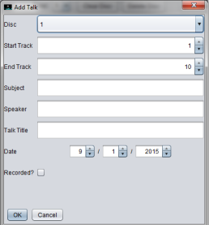
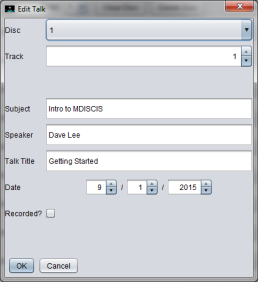
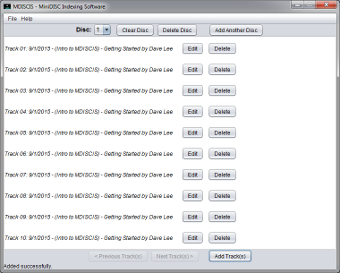

MDISCIS is a java program which acts as an information system for Minidiscs. Minidiscs do not allow artists and titles to be saved as track information. As a consequence, I developed MDISCIS in January 2003 as a solution to this problem. It acts as an information system for Minidiscs. The program has since then been regularly updated for new Java versions. MDISCIS is an open source project.
In order to prevent multiple edits to the source code simultaneously, this project uses the GIT version control system. The source code is available from here.
You need the Java 8 Runtime Enviroment (or later) installed on your computer. If you are not sure which version of Java you have, run “java -version” from the command prompt (Windows) or from a terminal (Linux/Mac). You can download the latest version of the Java Runtime Environment here.
Windows: Setup File (Download and run this file and follow the onscreen instructions). After installation, you can run MDISCIS from the start menu or the desktop. MDISCIS contains an on-line help system to answer queries and provide further help during use of MDISCIS.
Linux/Mac: JAR File (Download the file to a directory of your choice). After installation, open a console or terminal and navigate to the chosen folder. Once in this directory, run java -jar “mdiscis-2.1.2.jar” MDISCIS contains an on-line help system to answer queries and provide further help during use of MDISCIS.
Android/iOS: There is no app version of MDISCIS currently available.


